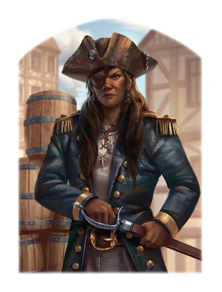

"Was kann es Schöneres geben, als die frische Brise im Haar zu spüren, den Horizont vor Augen und die Planken eines schnellen Schiffs unter den Füßen? Niemand wird uns je wieder sagen, was wir zu tun haben. Niemals wieder werden wir machtlos sein! Wir sind unsere eigenen Herren und nehmen uns, wofür wir stark genug sind. Auf mein Kommando - entert!"
Die beeindruckende Karriere von der Rudersklavin zur Navigatorin der horasischen Marine und von dort zu einer der gefürchtetsten Piratinnen des Südmeers ist Bestandteil vieler Seemannsgeschichten. Geboren in der Kolonie Port Stoerrebrandt, hat die Tochter einer bornischen Kaufherrin und ihres mohischen Liebhabers sich angeblich selbst in die Sklaverei verkauft, um ihrer herrischen Mutter zu entkommen. Schon seit einiger Zeit ist Nadaljeff, wie Vanja gerufen wird, unter den Piraten der Charyptik eine feste Größe und wird sogar als Nachfolgerin des berüchtigten Piratenkönigs Lolonna ins Gespräch gebracht, dem sie bei einer Meuterei einst eines seiner Schiffe stahl. Sie schert sich jedoch nicht sonderlich um die Politik der Stadt, viel lieber verspricht sie ihren Frauen und Männern eine gute Prise und lässt sich an Bord der Blutrochen den Wind der Freiheit um die Nase wehen. Sie gilt als äußerst gerissen und handelt gerade so grausam, wie es ihrem Ruf gut tut und den Geschäften nicht schadet - es sei denn, man stellt ihre Zielsicherheit mit der Balestrina in Frage oder spricht sie auf den Verlust ihres Auges an.
Volkes Stimme
- "Elendes Miststück, ay! Aber Nadaljeff ist sich nicht zu fein, dir deinen eigenen Kram anschließend wieder zu verkaufen. Das nenn ich Geschäftssinn!"
- "Spiel bloß nicht den Helden, hörst du? Die Kapitänin ist eine blutsaufende Irre. Ausrauben tun sie dich sicher, aber es liegt an dir, ob sie dich dazu noch versklavt, verkrüppelt oder den Kahn versenkt, auf dem du fährst."